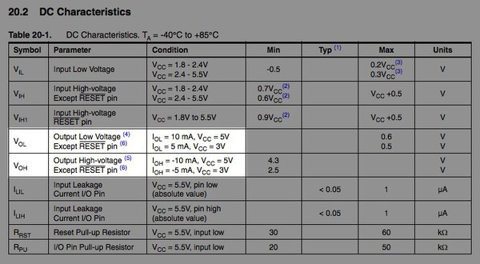

Embedded Programming
This week's project was programming the board I designed two weeks ago, a simple project given my familiarity with programming and C. I'd have liked to make a pair of radio-networked boards to play around with that but last week really put me behind. So I'll have to swing back to networked communications in a future project.
I'd never programmed a chip before so I started out by getting a test program from Neil running. The program implements serial communication through the board's FTDI connector. Each time the board receives a text character, it replies "you typed:" followed by the characters it's received. The makefile knows how to compile the program to a .hex file and use the library avrdude to send that to the chip. I installed avrdude so that this would work.
Compiling Neil's program worked, but when I tried to send it to the chip it errored with:
avrdude: initialization failed, rc=-1 Double check connections and try again, or use -F to override this check.
I'd wired power to my new board by connecting its FTDI header to my computer's USB, and I'd wired its 2x3 programming header to the matching header on the ISP programmer I made a month ago. The programmer was connected via miniUSB to the computer. It turned out the avrdude failure was an issue with my ISP programmer; when I swapped it out for a tested lab programmer Neil's program successfully transmitted.
To test the program I downloaded the Arduino application and installed ATtiny support. It gave me an easy way to send and receive messages between my computer and the board, and I confirmed that the board followed Neil's code correctly.
At this point I read through Neil's program in detail. I got a feel for the various bit operations used to manipulate the pins and appreciated some of Neil's macros for abstracting away low-level errata. It was nice to see how the serial communication was implemented, too, even though I'd only be doing simpler things this week.
I'd wired up the R, G, and B terminals of my LED to PWM-capable pins on chip, but someone with more experience than me, Dan, pointed out a problem. The 3-color LED I was using was a common-anode LED, with one lead coming in high and three going out low. In order to turn a color on or off I needed to choose whether to sink current on its lead. As Dan understood it, the ATtiny PWMs toggled between high and float and therefore would never be able to sink current - I'd never turn an LED on. We learned later that Dan was mistaken, but I went with that assumption. Without making a new board, the PWM would need to be in software.
Dan was also concerned that PWMs aside, the ATtiny couldn't safely sink enough current into any pin to power an LED. Fortunately, that's one I knew how to look up. I went through the ATtiny44 datasheet and learned that the pins are symmetric with respect to sourcing and sinking current - in either case, when the chip is powered from 5v each pin can handle 10mA and the chip can handle 60mA summed across its pins. 10mA was plenty for powering this LED.
Now I had to work out how to sink a little less than 10mA through an LED channel when it was turned on. I looked on the datasheet for the RGB LED and found that I should drop no more than 1.9v across an LED channel to stay under 10mA. Bringing it down to 1.8v would drop the current to about 5mA. Since I'd be dropping 5v between VCC and an ATtiny pin, I needed a resistor that would pass 5-10mA at 3.1-3.2v. In principal I should have thought this through earlier when I designed the chip - I'd just stuck a 1k resistor in series with the LED common anode and assumed it would work out. Fortunately, we had 500ohm resistors in the identical size to the 1k component I'd used, and that worked nicely enough. 500 ohms drops 3v at 6mA, a level at which the LED would drop about 1.86v; since this sums to just under 5v, I'd end up with a bit more than 6mA flowing. So I swapped out the resistor.
In code now, I defined macros to name each of the ports and pins where the chip talked to buttons and LEDs. I looked up the corresponding port-pin combinations on a pinout image found by Google search. In main, I set the LED pins as outputs and the button pins as inputs.
In a once-per-microsecond loop I turned the red LED on 10% of the time. I set up the code so I could specify parts-per-thousand that the LED should be on for and for the first n parts in every thousand microseconds I'd pull the LED's pin low. Then I'd send it high for the rest.
I sent this code to the chip to make sure it worked, and it did - at a 10% duty cycle the red LED was very bright! I dropped it to 1% and it was a more tolerable brightness.
Switching to green caused the LED to be always off. This was puzzling. I tried blue and it worked just like red had. (Well, for an equivalent duty cycle the blue LED was dimmer than red by a factor of 2-2.5, but this is normal - present-day blue LEDs are less efficient than other colors.) I tried turning multiple colors on at once and although red and blue could coexist happily, trying to turn on green knocked out everyone else. Using a probe I checked the voltages around the board, and whenever green should have been off the voltages were as expected. Whenever green should have been on, however, voltages at the red and blue terminals were a 1-2v lower than they should have been for tied-high (off) pins.
I tried swapping a new LED in place of the one on the board but nothing changed. Well, I had a 2-color LED at least - I went with it.
I now focused on the buttons. Pushing a button would pull its corresponding pin low, so I wrote code that would toggle the red LED on or off in correspondence with the first button being pressed or not. I ran the code and the LED was permanently on. This was perplexing. I tried flipping the high/low correspondence so the LED would be always off, and now when I pushed the button the LED would briefly flash on. Okay, so a button press was being detected, but a button hold wasn't being detected. Often releasing the button triggered the LED to flash again. (In the first case, then, the LED had been responding to the button, but its flashing off was too slight for me to notice.)
I tried the other buttons and found the same behavior. I wrote code that would turn the LED one of four colors (red, reddish-purple, bluish-purple, blue) based on which button was pressed, and this flashed the correct colors. At this point I probed the button input pins to try debugging their poor performance and found they were pretty much always low. Aha! They weren't being pulled high! I searched online and found the way to enable their internal pull-up resistors, and they started behaving correctly. I put my code back into an active-lows input mapping. Things were starting to behave appropriately.
In code, I created a 3-int array for rgb pulses-per-millisecond and a 4-int array for button states. (Using ints for the binary button states is overkill - it's even overkill for the 0-999 integers of the rgb pulses-per-millisecond - but as someone used to high level languages I don't know all the small memory types for C, and it doesn't really matter here. I cared about array indexing syntax and not much else.) In the main loop I now did three things. I read the button inputs into the button states array. I passed this and the rgb pulses-per-millisecond array to a function `set_rgb_pulse_rates`, which updated the rgb pulses-per-millisecond values. Then I decided for each rgb channel whether to turn it on or off. In the `set_rgb_pulse_rates` function, I kept green always off, and I set each button to contribute a unique combination of blue and red to the total output.

When I discussed the green LED problem with a friend, he pointed out that the LED was probably backwards. The LEDs in our lab turned out to be different from the LEDs in the Eagle library I was using - the green and common anode terminals were switched! The footprint was identical, however. Fortunately, the green and common anode terminals were 180 degrees different from each other and the component has 180-degree symmetry, so I simply rotated the part and flipped the mappings to blue and red in my software. I could now turn on green!
The datasheet for the LED I was actually using had per-LED V-vs-I plots and I-vs-luminous-intensity plots, which makes sense - in retrospect, I realized it was strange the first LED had claimed a single global V-vs-I relationship for all LEDs. The new datasheet pointed to large discrepancies between red luminance and the other two colors, and this held true in my circuit. I set green and blue to PWM 2.5 times as long for equivalent desired output and this led to roughly equivalent performance.
I adjusted the code to have one button for each LED color and the last button to double the brightness. If the last button was pushed by itself it would cause a faint white glow. This would be good for now.